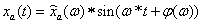
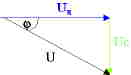

Frequenzgang und Ortskurve
Der Frequenzgang kann experimentell bestimmt werden. Wenn man ein sinusförmiges Eingangssignal aufschaltet und den Ausgang beobachtet, nachdem er eingeschwungen ist. Man kann sich ein Experiment vorstellen, in dem man eine Reihenschaltung aus Widerstand und Kondensator mit einem Funktionsgenerator mit einem Sinus beqaufschlagt. Am Kondensator misst man die Ausgangsspannung. Der Sinus am Ausgang läuft dem Eingang hinterher. Die Amplitude am Ausgang ist kleiner.

Der experimentelle Frequenzgang ergibt sich zu:
Beispiel RC-Glied:
Aus der Elektrotechnik ist die Reihenschaltung von Widerstand und Kondensator. Die Schaltung ist ein PT1- System und ein Tiefpaß.
Die Widerstände ergeben sich durch den komplexen Widerstand.
Da
der gleiche Strom durch beide Widerstände geht, ergibt sich
folgendes Zeigerbild:

Die
äußere Spannung (Cyan) bleibt konstant. Es ändern
sich die Spannung Uc (Rot) am Kondensator und die Spannung Ur (Grün)
am Widerstand. Sie sind rechtwinklig zueinander. Die Frequenz wird
erhöht und damit wird Uc kleiner.
Die Zeiger kann man auch als Drehzeiger auffassen:
Die
Amplitude und Phasenverschiebung kann man durch einen
Funktionsgenerator und ein Osziloskop messen.
Die
Zeiger führen zu einem Funktionswert, der gleichzeitig erreicht
wird:
In
dem folgenden Diagramm müßte der Zeiger bei höheren
Frequenzen schneller drehen, das ist bei der Animation nicht der
Fall. Auch müsste der Sinus rechts ernger zusammen rücken,
aber das ist aus Gründen der Vergleichbarkeit der
Phasenverschiebung nicht der Fall.